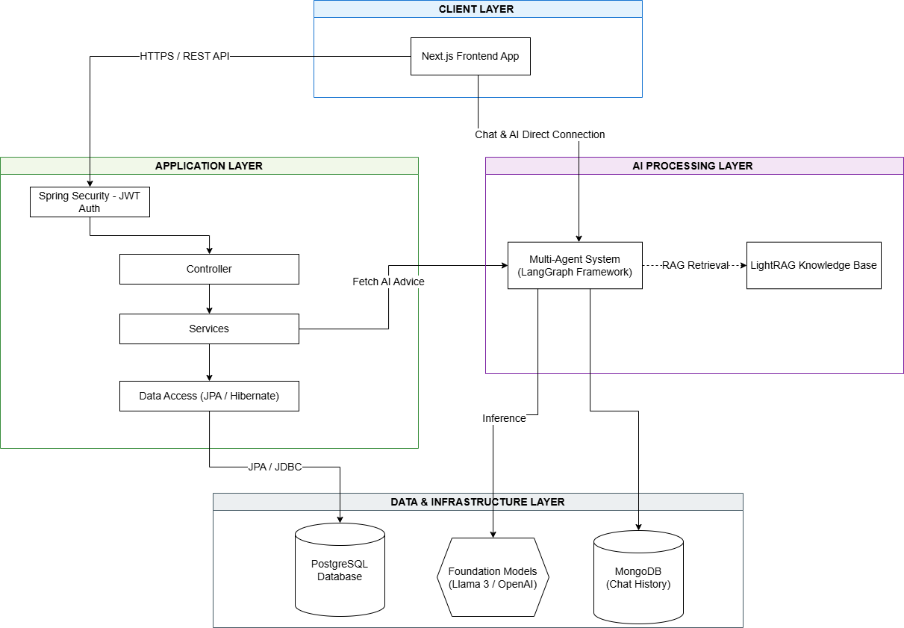
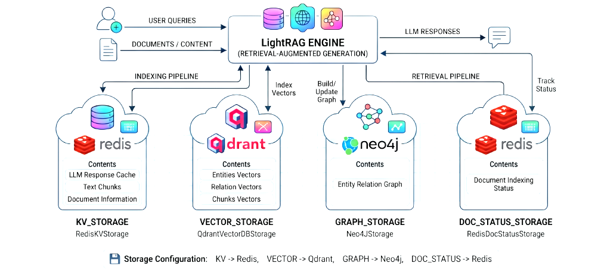
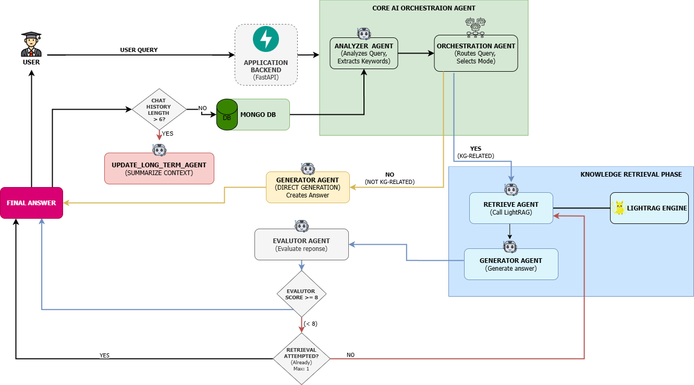
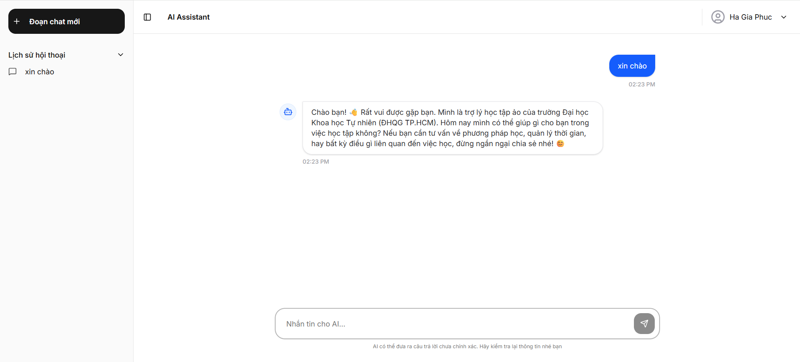

.png)
- Sinh viên CNTT tại HCMUS phải đối mặt với lượng kiến thức lớn và rời rạc, phân tán trên nhiều hệ thống khác nhau.
- Các công cụ tìm kiếm thông thường không thể chỉ ra mối quan hệ giữa các môn học hay giải thích tính liên kết của kiến thức.
- Hệ thống hỗ trợ học vụ hiện tại chủ yếu dựa trên cổng thông tin tĩnh hoặc chatbot dựa quy tắc, gây phân mảnh thông tin.
- Các mô hình AI phổ biến đôi khi cung cấp thông tin không chính xác, không hiểu rõ quy định đặc thù của nhà trường.
① Xây dựng Đồ thị tri thức
Xây dựng Knowledge Graph từ kho dữ liệu học vụ của Khoa CNTT bằng LightRAG, kết hợp kiểm chứng cấu trúc bằng chuẩn SHACL.
② Kiến trúc Đa tác nhân
Phát triển hệ thống Multi-Agent trên LangGraph để xử lý truy vấn học tập phức tạp, tự động phân tích và phối hợp nhiều bước suy luận.
③ Đánh giá tự động
Xây dựng pipeline đánh giá kết hợp RAGAS và LLM-as-a-Judge để đo lường chất lượng hệ thống một cách khách quan.
- Đồ thị tri thức kết hợp SHACL: Cơ chế kiểm chứng xác định (deterministic grounding) đảm bảo tính đúng đắn và liên kết chặt chẽ giữa các thực thể, giải pháp Entity Resolution cho ngữ cảnh học thuật tiếng Việt.
- Kiến trúc Multi-Agent trên LangGraph: Hệ thống đa tác nhân tự động phân tích ý định, điều phối công cụ truy xuất (Local/Global/Hybrid) và phối hợp suy luận.
- Khung đánh giá toàn diện: Kết hợp RAGAS (Faithfulness, Relevance, Correctness) với LLM-as-a-Judge, cho phép đo lường và tinh chỉnh chất lượng hệ thống khách quan.
- Ứng dụng thực tiễn: Trợ lý ảo LearningPath phục vụ tra cứu học vụ, tư vấn lộ trình cá nhân hóa cho sinh viên Khoa CNTT.

Hình 1. Kiến trúc tổng thể hệ thống hỗ trợ học tập thông minh
Tiền xử lý tài liệu (MinerU)
Bóc tách PDF/Office/Web bằng VLM, OCR và MFR. Chuyển đổi tất cả về định dạng Markdown đồng nhất, kiểm tra trùng lặp bằng MD5 Hash.
Phân mảnh kép (Dual Chunking)
Fixed-size: 1200 token + overlap 100 token → phục vụ trích xuất đồ thị.
Hierarchical: Phân cấp đa phương thức (Section/Table/Figure) → phục vụ truy xuất RAG chính xác.
Trích xuất thực thể & Quan hệ
Mô hình Quadruple (Source, Target, Keywords, Description). Cơ chế Gleaning thu nhặt bổ sung. Dynamic Prompt Flow theo 4 miền tri thức.
Kiểm chứng SHACL & Entity Resolution
Đối chiếu bằng chứng xác định (exact + fuzzy ≥ 0.9). Phân giải thực thể 2 giai đoạn: Candidate Retrieval → LLM Decision. Quan hệ SAME_AS bảo toàn provenance.

Hình 2. Quy trình tổng quát từ văn bản thô đến đồ thị tri thức
Hệ thống sử dụng LangGraph để điều phối 5 thành phần xử lý chuyên biệt theo đồ thị trạng thái có hướng, với luồng tuyến tính và tất định nhằm tối ưu độ trễ:

Hình 3. Quy trình điều phối đa tác nhân và luồng truy vấn
| Tiêu chí | N=50 | N=400 |
|---|---|---|
| Độ phủ văn bản (Chunk Coverage) | 96.1% | |
| Groundedness Precision | 98.00% | 94.08% |
| Tỷ lệ ảo giác | 2.0% | 5.0% |
| CQ Pass Rate (Ontology) | 71.4% | |
| Lỗi thiết kế nghiêm trọng | 0 | |
| Chỉ số | Trung bình | Trung vị |
|---|---|---|
| Token-level F1 | 0.297 | 0.258 |
| ROUGE-L | 0.236 | 0.185 |
| BERTScore F1 | 0.721 | 0.717 |
| Answer Correctness (RAGAS) | 0.650 | 0.641 |
Khoảng cách BERTScore (0.721) vs Token F1 (0.297) cho thấy hệ thống truyền đạt đúng nội dung tri thức bằng cách diễn đạt khác với đáp án chuẩn — đặc trưng của hệ thống RAG sinh văn bản tự do.
- ✅ 76.1% đánh giá trả lời đúng trọng tâm (4-5 điểm)
- ✅ 81% đánh giá cung cấp thông tin chuyên sâu đầy đủ
- ✅ 72.8% hài lòng với giao diện UI/UX (4-5 điểm)
- ✅ 72.7% hài lòng tổng thể (4-5 điểm)

Hình 4. Giao diện trợ lý ảo LearningPath
- Số hóa thành công kho dữ liệu học vụ phức tạp thành Đồ thị tri thức có khả năng suy luận.
- Hệ thống đa tác nhân thông minh tự động chọn lọc công cụ phù hợp với từng dạng câu hỏi.
- Pipeline đánh giá tự động LLM-as-a-Judge + RAGAS đo lường chất lượng khách quan.
- • Truy vấn đa phương tiện (Multimodal RAG)
- • Mở rộng bộ nhớ ngữ cảnh bằng Knowledge Graph
- • Module lộ trình học tập cá nhân hóa
- • Diễn đàn học tập cộng đồng với AI Summarizer